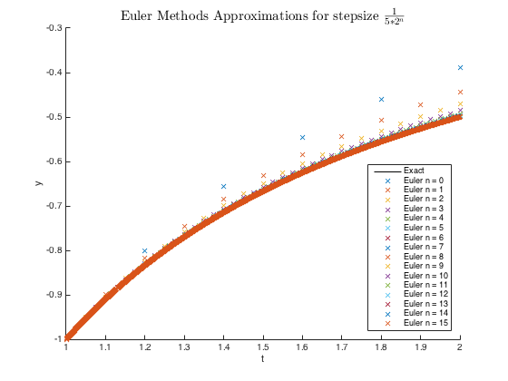
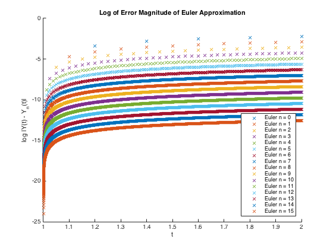
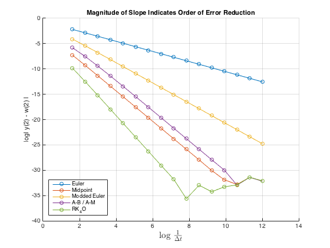

Contents
Matt McFarland
E91, lab 5, question 4
function [] = q4script()
close all; clear all;
Define Constants and Functions
Constants
start_t = 1;
end_t = 2;
start_y = -1;
n_end = 15;
n = 0:n_end;
methods = 5;
Functions
Rate = @(y,t) 1 ./ t^2 - y ./ t - y.^2;
Y = @(t) -1 ./ t; % Real Solution
StepSize = @(n) .2 .* (2.^-n); % Step size (delta t)
ODE Solution Functions
EulerFunc = @Euler; % Single Step MidpointFunc = @Midpoint; % " ModEulerFunc = @ModifiedEuler; % " RK4OFunc = @RK4O; % " TwoStepFunc = @TwoStep; % Multi-Step
Create an error storage matrix for error of given method at t = 2
Row signifies step size (n-1) Column 1 = Y(t=2) Column 2 = 1 / Delta t which is inverse of stepsize Column 3 = Eulers Method Column 4 = Midpoint Method Column 5 = Modified Euler's Method Column 6 = 2-Step A-B/A-M Method (1 correction) Column 7 = Runge-Kutta 4th Order
errors = zeros(length(n),methods+2);
errors(:,1) = Y(end_t);
errors(:,2) = (1 ./ StepSize(n))';
t = linspace(start_t,end_t,100); % Trace exact solutions for plotting
y = Y(t);
EULER'S METHOD
[Euler_t, Euler_y] = SolveODE(Rate, EulerFunc, StepSize, start_y, start_t, end_t, n_end);
Plot Euler Method Results
figure(1)
hold on
plot(t,y,'k'); % Real Solution
legend_str1{1} = 'Exact';
for i = 1:length(n)
points = (end_t - start_t) / StepSize(n(i)) + 1;
plot(Euler_t(i,1:points) , Euler_y(i,1:points),'x')
legend_str1{i+1} = sprintf('Euler n = %d',n(i));
end
hold off
legend(legend_str1,'Location','southeast');
axis([start_t end_t -1 -.3])
xlabel('t')
ylabel('y')
title_str = title('Euler Methods Approximations for stepsize $ \frac{1}{5*2^n} $');
set(title_str,'Interpreter','Latex','FontSize',15)
 Plot Errors for Euler's N methods
figure(2)
hold on
for i = 1:length(n)
points = (end_t - start_t) / StepSize(n(i)) + 1;
plot(Euler_t(i,1:points),log(abs(Y(Euler_t(i,1:points)) - ...
Euler_y(i,1:points))), 'x')
% Lose first point at t = 0 because log (0) isn't displayed
end
hold off
legend(legend_str1{2:end},'Location','southeast');
xlabel('t')
ylabel('log |Y(t) - Y_n(t)|')
title('Log of Error Magnitude of Euler Approximation')
 Calculate Solutions for Other Solution Methods
MIDPOINT METHOD
[Mid_t, Mid_y] = SolveODE(Rate, MidpointFunc, StepSize, ...
start_y, start_t, end_t, n_end);
MODIFIED EULER'S METHOD
[ModdedEuler_t, ModdedEuler_y] = SolveODE(Rate, ModEulerFunc, ...
StepSize, start_y, start_t, end_t, n_end);
RUNGE-KUTTA 4th ORDER METHOD
[RK_t, RK_y] = SolveODE(Rate, RK4OFunc, StepSize, start_y, ...
start_t, end_t, n_end);
A-B / A-M TWO STEP PREDICTOR-CORRECTOR SCHEME
[TS_t, TS_y] = TwoStep(Rate, StepSize, start_y, start_t, end_t, n_end);
Store errors at t = 2 for each method for the given n
for i = 1:length(n) points = (end_t - start_t) / StepSize(n(i)) + 1; errors(i,3) = abs(errors(i,1) - Euler_y(i,points)); errors(i,4) = abs(errors(i,1) - Mid_y(i,points)); errors(i,5) = abs(errors(i,1) - ModdedEuler_y(i,points)); errors(i,6) = abs(errors(i,1) - TS_y(i,points)); errors(i,7) = abs(errors(i,1) - RK_y(i,points)); end
Plot Inverse of Delta T vs. Error Magnitude (log-log)
X values are calculated (use for slope calculation)
log_x = log(errors(:,2));
log_vals = log(errors(:,3:7));
figure(3)
hold on
for m = 1:methods
plot(log_x,log_vals(:,m),'o-')
end
hold off
grid on
legend('Euler','Midpoint','Modded Euler','A-B / A-M', 'RK_4O', ...
'Location','southwest');
xlabel('log $\frac{1}{\Delta t}$','Interpreter','Latex','FontSize',15);
ylabel('log| y(2) - w(2) |')
title('Magnitude of Slope Indicates Order of Error Reduction')
 Tabulated log of errors between Y(2) and approximated Y(2) Calculated shows degree to which error is decreasing as a function of h. Use first 3 point and s points because linear behavior is constant end points hit machine limit of precision (RK4O, Midpoint and TwoStep).
s = 5; % point to calculate slope at (from third to s)
Euler's Method
Euler_log_errors = log(errors(:,3))
Euler_slope = (log_vals(s,1) - log_vals(1,1)) / (log_x(s) - log_x(1))
Euler_log_errors = -2.1960 -2.8671 -3.5481 -4.2347 -4.9245 -5.6159 -6.3082 -7.0009 -7.6938 -8.3869 -9.0800 -9.7731 -10.4662 -11.1594 -11.8525 -12.5456 Euler_slope = -0.9841
MidPoint Method
MidPoint_log_errors = log(errors(:,4))
Midpoint_slope = (log_vals(s,2) - log_vals(1,2)) / (log_x(s) - log_x(1))
MidPoint_log_errors = -7.2572 -9.2766 -11.3354 -13.4071 -15.4833 -17.5612 -19.6400 -21.7191 -23.7984 -25.8774 -27.9508 -30.0610 -31.8966 -32.8148 -31.3826 -32.1069 Midpoint_slope = -2.9669
Modifed Euler's Method
ModdedEuler_log_errors = log(errors(:,5))
ModdedEuler_slope = (log_vals(s+2,3) - log_vals(1+2,3)) / (log_x(s+2) - log_x(1+2))
ModdedEuler_log_errors = -4.1056 -5.4163 -6.7729 -8.1466 -9.5271 -10.9107 -12.2956 -13.6813 -15.0672 -16.4534 -17.8396 -19.2258 -20.6121 -21.9984 -23.3848 -24.7705 ModdedEuler_slope = -1.9919
A-B / A-M Two Step, Predictor Corrector (One Correction)
TwoStep_log_errors = log(errors(:,6))
TwoStep_slope = (log_vals(s,4) - log_vals(1,4)) / (log_x(s) - log_x(1))
TwoStep_log_errors = -5.8045 -7.5239 -9.4153 -11.3985 -13.4293 -15.4843 -17.5515 -19.6248 -21.7012 -23.7791 -25.8580 -27.9349 -29.9916 -32.9526 -31.4114 -32.1777 TwoStep_slope = -2.7501
Runge-Kutta Fourth Order
RK4O_log_errors = (errors(:,7))
RK4O_slope = (log_vals(s,5) - log_vals(1,5)) / (log_x(s) - log_x(1))
RK4O_log_errors =
1.0e-04 *
0.5452
0.0380
0.0025
0.0002
0.0000
0.0000
0.0000
0.0000
0.0000
0.0000
0.0000
0.0000
0.0000
0.0000
0.0000
0.0000
RK4O_slope =
-3.9358
end
Generic ODE Solution Function and Specific Solution Functions
Generic Single Step Solution method solves ODE given a solution method Outputs a n X 2^n matrix of solution values where for values(row, column) Row is the n in the step size calculation Column is the ith step
Can be applied for Single Step solution functions
function [t, y] = SolveODE(RateFunc,SolutionFunc,StepFunc,y_0,t_0,t_end,n_max) % --- INPUTS --- % RateFunc = ODE to evaluate % SolutionFunc = calculates w_i+1 % StepFunc = calculates Delta t for given n % y_0 = initial y coordinate % t_0 = initial t coordinate % t_end = final t coordinate to solve ODE at % n_max = solve for n = 0, 1, 3 ... n_max % --- OUTPUTS --- % t = (n_max + 1) X 2^n_max matrix with solutions t values % y = (n_max + 1) X 2^n_max matrix with solutions y values % Find out how many steps will be needed for the n_max method max_len = (t_end - t_0) / StepFunc(n_max); t = zeros(n_max + 1, max_len); y = zeros(n_max + 1, max_len); t(:,1) = t_0; y(:,1) = y_0; n = 0:n_max; % Calculate Solutions iterations for each n value for i = 1:length(n) delta_t = StepFunc(n(i)); steps = (t_end - t_0) / delta_t; for j = 1:steps t(i,j+1) = t(i,1) + j * delta_t; y(i,j+1) = SolutionFunc(RateFunc,y(i,j),t(i,j),delta_t); end end end
Euler's Method for calculating the next y value for a given rate function, current (y,t), and step size
function [next_y] = Euler(RateFunc,y,t,step) next_y = RateFunc(y,t) * step + y; end
Midpoint Method for solving ODE given rate function, current (y,t) and step size
function [next_y] = Midpoint(RateFunc,y,t,step) f_i = RateFunc(y,t); midpoint_rate = RateFunc(y + step/2 * f_i, t + step/2); next_y = y + step * midpoint_rate; end
Midpoint Method for solving ODE given rate function, current (y,t) and step size
function [next_y] = ModifiedEuler(RateFunc,y,t,step) f_i = RateFunc(y,t); f_next = RateFunc(y + step * f_i, t + step); next_y = y + step/2 * (f_i + f_next); end
Runge-Kutta 4th Order Method for solving ODE given rate function, current (y,t) and step size
function [next_y] = RK4O(RateFunc,y,t,step) f1 = RateFunc(y,t); f2 = RateFunc(y + step/2 * f1, t + step/2); f3 = RateFunc(y + step/2 * f2, t + step/2); f4 = RateFunc(y + step * f3, t + step); next_y = y + step/6 * (f1 + 2*(f2 + f3) + f4); end
A-B / A-M 2-Step Predictor Corrector Solution to ODE
Uses Runge-Kutta Fourth Order method to get y_1 (second point)
function [TwoStep_t, TwoStep_y] = TwoStep(RateFunc, StepFunc, y_0, t_0, t_end, n_max) max_len = (t_end - t_0) / StepFunc(n_max); TwoStep_t = zeros(n_max + 1, max_len); TwoStep_y = zeros(n_max + 1, max_len); TwoStep_t(:,1) = t_0; TwoStep_y(:,1) = y_0; n = 0:n_max; % For each n (stepsize) for i = 1:length(n) delta_t = StepFunc(n(i)); steps = (t_end - t_0) / delta_t; % Use RK40 for a single step to get f_1 TwoStep_y(i,2) = RK4O(RateFunc,y_0,t_0,delta_t); TwoStep_t(i,2) = TwoStep_t(i,1) + delta_t; % Calculate using prediction - correction with 1 correction for j = 2:steps TwoStep_t(i,j+1) = TwoStep_t(i,1) + j * delta_t; f_cur = RateFunc( TwoStep_y(i,j), TwoStep_t(i,j) ); f_back = RateFunc( TwoStep_y(i,j-1), TwoStep_t(i,j-1) ); predict = TwoStep_y(i,j) + delta_t/2 * (3 * f_cur - f_back); correct = RateFunc( predict, TwoStep_t(i,j+1) ); TwoStep_y(i,j+1) = TwoStep_y(i,j) + ... delta_t/12 * (5 * correct + 8 * f_cur - f_back); end end end